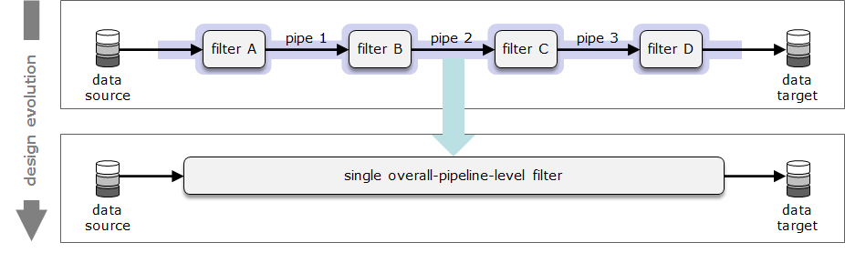
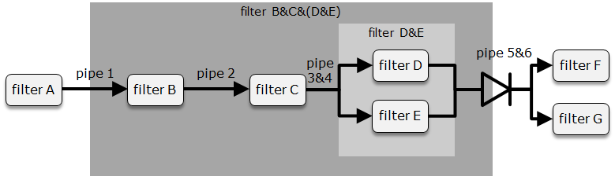

TtDT - Report - bCLEARer\'s nested gated pipeline architecture
Introduction
bCLEARer pipelines are often quite large, and as noted earlier, large pipelines are typically given a hierarchical, nesting structure to facilitate management. In this section, we look at the specific nesting strategies adopted by bCLEARer pipelines. [Within the overall pipeline architecture, the bCLEARer pipeline has a gated nesting structure. The first sub-section looks at the nesting, the second at the gating.]{.inline-comment-marker ref="94a61a44-2223-44ca-9332-3ed5a85f1c58"}
[]{#Bookmark30}
The bCLEARer pipeline's multi-level nesting structure
The bCLEARer pipeline's multi-level nesting structure is described in this section.
[]{#Bookmark31}
Multi-level nesting
As noted earlier, within a pipeline architecture, one can encapsulate sub-pipelines as filters (with pipes). These encapsulated components can themselves be nested, creating a multi-level nesting (breakdown) structure in the pipeline.
[
One can view the encapsulation structure in a nesting diagram - as shown below.
../assets/img_22.png){.confluence-embedded-image .image-center width="624" height="92"}]
The final nesting is of all the filters into a single overall-pipeline-level filter.
[
From the perspective of this top level final pipeline, the nesting is a series of decompositions. These can be a fixed series of decompositions into levels, where each decomposition takes the units at one level and divides them into units at the next level. This breaks down the overall process into levels, with base (undivided) units at the bottom level -- as shown in the figure below.
[ {.confluence-embedded-image
.image-center}]{.confluence-embedded-file-wrapper
.image-center-wrapper}[]{#Bookmark32}
{.confluence-embedded-image
.image-center}]{.confluence-embedded-file-wrapper
.image-center-wrapper}[]{#Bookmark32}
bCLEARer nesting decomposition levels
The bCLEARer pipeline is composed of three broad [levels of nested pipelines]{.inline-comment-marker ref="861ac95b-2424-4a63-a32b-3f0fad1d4af3"} (described in more detail later), based on the type of base filter:
bCLEARer nesting decomposition levels
(Domain) thin slices the base unit of the breakdown of scope into domains bCLEARer stages the base unit of the stages of the bCLEARer digital journey bUnits the base unit of the bCLEARer pipeline architecture, composed of the bUnit filter and its associated bUnit pipes
source: bCLEARer nesting decomposition levels
This can be visualised as a three-level[ ]{.inline-comment-marker ref="70a72c9f-0354-4a94-8b25-8635f2df1689"}breakdown.\
[
Within each level there may be further unrestricted secondary nesting, with as many levels of nesting as is useful.
[]{#Bookmark33}
Nested [pipeline's data stage gates]{.inline-comment-marker ref="afa56197-aef7-4002-832c-aa73a6689487"}
The nested pipeline data stage gates are described in this section.
[]{#Bookmark34}
The data stage gates
[Where appropriate, the nested pipelines are designed with their input and output pipes as data stage gates]{.inline-comment-marker ref="085ea720-4c84-4838-9541-05206763f3dc"}. Typically, bCLEARer stage and thin slice pipelines have these gates. This dual (input and output) gate design for nested pipelines enables the original and transformed data to be inspected and compared. To assist with this, the design of an output gate\'s data also aims to clean it sufficiently to provide a SSOT (TtDT - Report - Appendix - Aggregated S(ingle) S(ource) O(f) T(ruth){linked-resource-id="5773328385" linked-resource-version="3" linked-resource-type="page"}) snapshot of its state at this stage of its digital journey. Where an input gate is an output gate of the previous process, it will also be in a SSOT snapshot. And in so doing, one can make the journey\'s transformations visible by comparing snapshots. In the bCLEARer process, these stage-gates are not decision points (as they are in some waterfall processes); though where data fails an inspection, it may be held back if required. The focus is on inspection not decision in an agile iterative process.
Establishing data gates for nested pipelines, especially SSOT data gates, is a very cost effective way of creating inspection points that can greatly simplify improving and maintaining quality. It helps, for example, in the identifying of the source of problems: finding the first gate at which a problem appears, isolates between which gates it arose. [ One of the drivers in the design of the nesting structure is ensuring the gaps between gates are sufficiently small to make finding problem data easy. ]{.inline-comment-marker ref="28973395-2ee7-4abd-af44-b260c9b96c43"}
[]{#Bookmark35}
Designing a gate
Hence, g[ates are designed into the process.]{.inline-comment-marker ref="e13d2506-bca6-4408-8cbe-fcc690a88345"} The design involves two layers of nesting. Given a pipeline that needs to be gated at one end, one needs to create a pipe that aggregates all the data flowing through that end of the pipeline. One way of doing this is creating a nesting that encapsulates all the filters with pipes that travel outside the pipeline. This will encapsulate the outgoing pipes into a single (aggregated) pipe, an example of this is given in the figures below.
In this figure, the filters are just encapsulated. This results in the unaggregated output of two pipes -- [pipe 5 and pipe 6.]

In this figure, the pipes are encapsulated first and then the filters. This results in the aggregated output of a single pipe -- pipe 5&6.

This diagram includes the gate icon, as shown below.
[ {.confluence-embedded-image
.image-center width="204"
height="79"}]
{.confluence-embedded-image
.image-center width="204"
height="79"}]
The data icon is typically adorned with a gate icon if the data is gated, as shown below.
[ {.confluence-embedded-image
.image-center width="204"
height="80"}]
{.confluence-embedded-image
.image-center width="204"
height="80"}]
As usual, we can look at a nesting diagram to see the lower level structure hidden in the simple pipeline diagram - as shown in the figure below.
